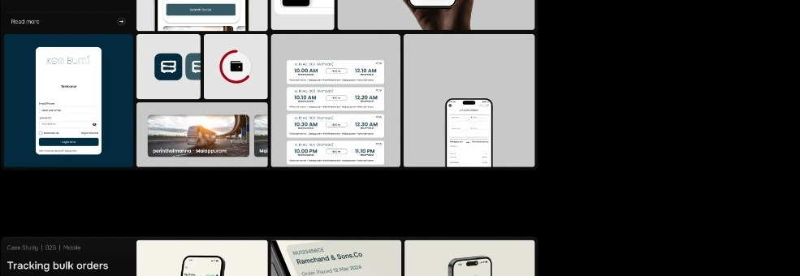
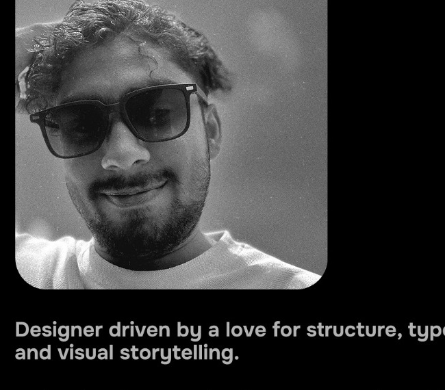
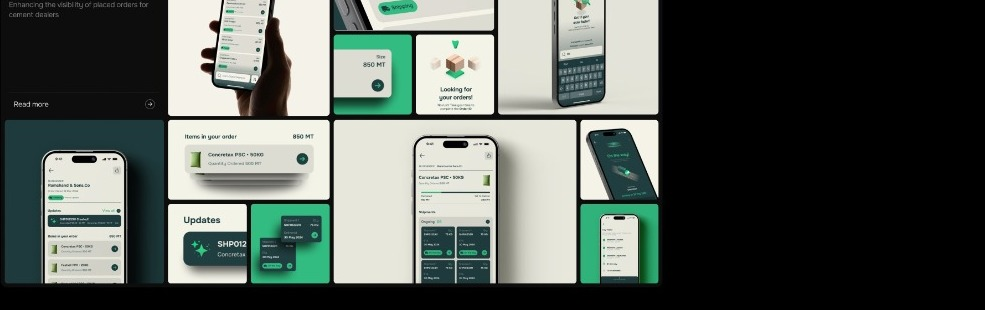
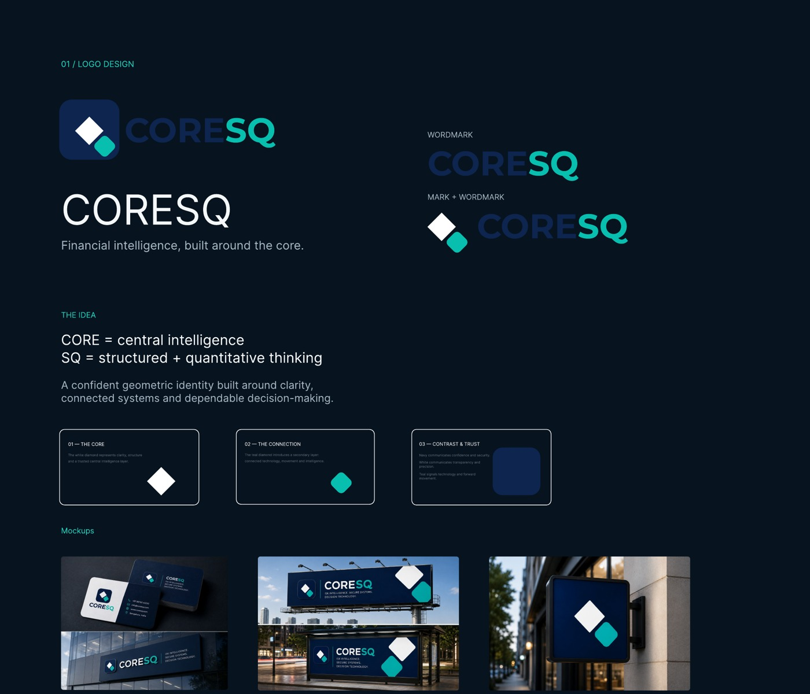
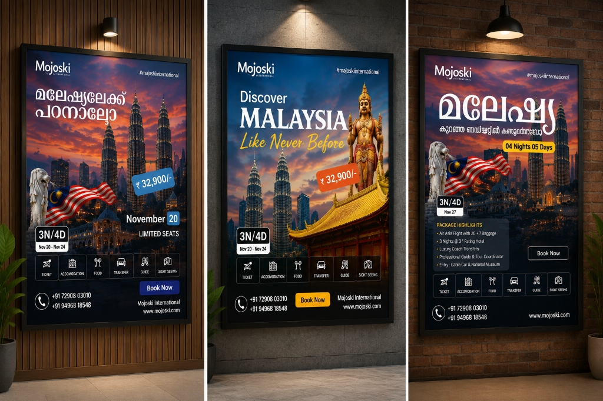
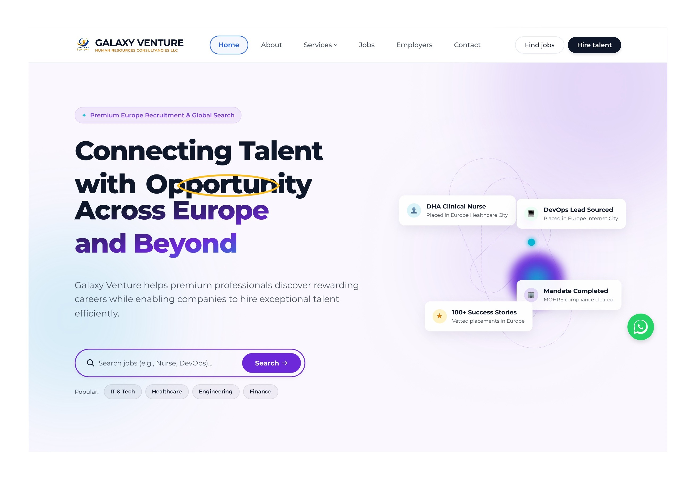

Kera Bus
Real-time bus operations and tracking concept designed to make everyday travel easier to follow.
View case study ↗I design digital experiences that are clear, useful, and visually considered.
UI/UX & graphic designer with hands-on experience across web, mobile, branding, and digital marketing.

From product experiences to brand systems and marketing creatives.

Real-time bus operations and tracking concept designed to make everyday travel easier to follow.
View case study ↗
A focused mobile experience for tracking placed orders and surfacing important operational updates.
View case study ↗
Financial intelligence identity built around structure, connection, and dependable decision-making.
View brand case study ↗
High-conversion digital posters, multilingual travel advertising, and commercial brand systems built for multi-channel performance.
View case study ↗
A recruitment platform connecting professionals with opportunities across Europe — designed from discovery and job search through hiring and candidate management.
View case study ↗Design is where structure, storytelling, and problem solving meet.
I enjoy turning complex ideas into simple, usable experiences.
I work across user research, wireframing, prototyping, interface design, branding, and social content. I care about making the right thing clear before making it beautiful.
My experience includes freelance design, UI/UX work for an international study-abroad company, mentoring students in Figma and Adobe tools, and digital marketing projects.
Selected professional experience from 2023 to present.
Designed responsive websites and mobile products; created logos, posters, marketing assets, and interactive prototypes.
Designed and refined web and mobile experiences, using user research and usability testing to inform design decisions.
Taught UI/UX design, design thinking, wireframing, Figma, Photoshop, and Illustrator while reviewing student portfolios.
Supported wireframes, social creatives, marketing banners, competitor research, and brand consistency.
Inspect the complete curriculum vitae online or download a high-resolution PDF copy.
Hands-on designer specializing in user-friendly web and mobile interfaces, wireframes, prototypes, brand identity, and marketing creatives. Skilled in Figma, Photoshop, and Illustrator, with experience in user research, usability testing, and design thinking.